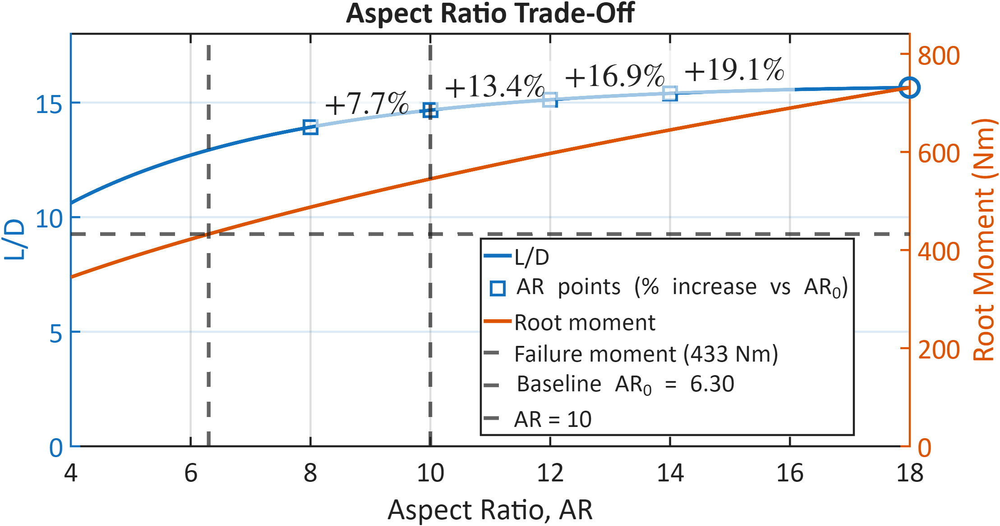
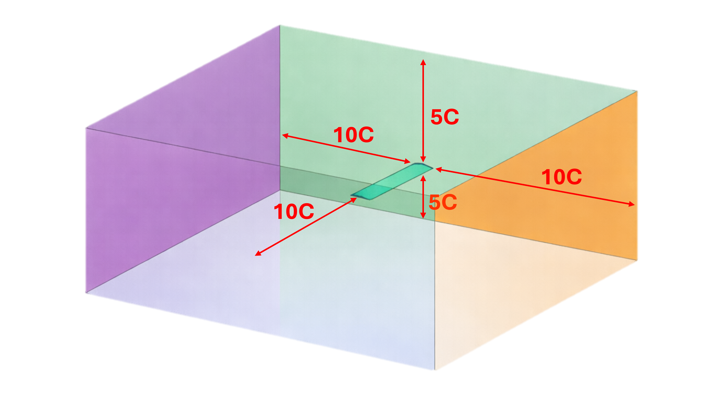

Why Longer Wings Make Better Drones
Think of an albatross versus a sparrow — the albatross has long, narrow wings and can glide for thousands of kilometres with barely a wingbeat. The sparrow's short, stubby wings work fine for quick bursts, but are inefficient for sustained flight. The same physics applies to drone wings. Aspect ratio (wingspan divided by wing width) is the key number: a higher aspect ratio means less energy wasted fighting air resistance, which translates directly to longer flight times, greater range, and more payload capacity.
The Brunel UAS Society's 2022 competition drone has an aspect ratio of 6.3 — a reasonable starting point, but conservative compared to what's aerodynamically achievable. The IMechE UAS Challenge 2026 rewards efficiency, endurance, and technical innovation. This project asks: how much better can we make it, and does the structure hold up?

Table 1 — Starting Point: BrUAS 2022 Baseline Wing
| Parameter | Value | Parameter | Value |
|---|---|---|---|
| Aerofoil profile | NACA 4415 | Chord length c | 399.9 mm |
| Full wingspan b | 2520 mm | Wing area S | ≈ 1.0 m² |
| Aspect ratio AR | 6.3 | Cruise speed | 31.5 m/s (≈ 113 km/h) |
| Structural load limit | 3.5 G | Reynolds number Re | 8.6 × 10⁵ |
The Final Wing — AR 10 with Optimised Aerofoil & Winglets
